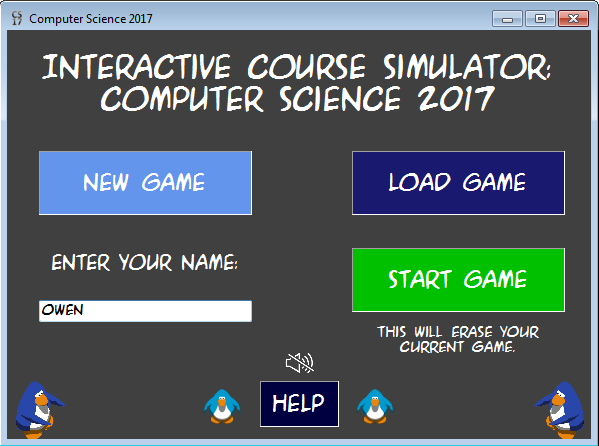
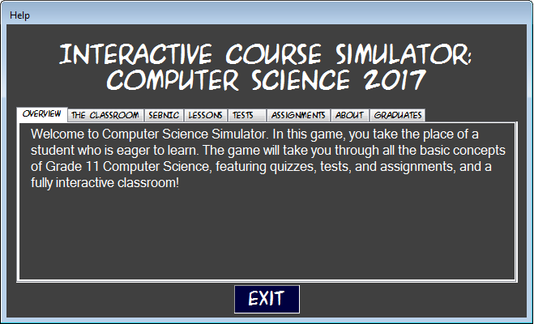
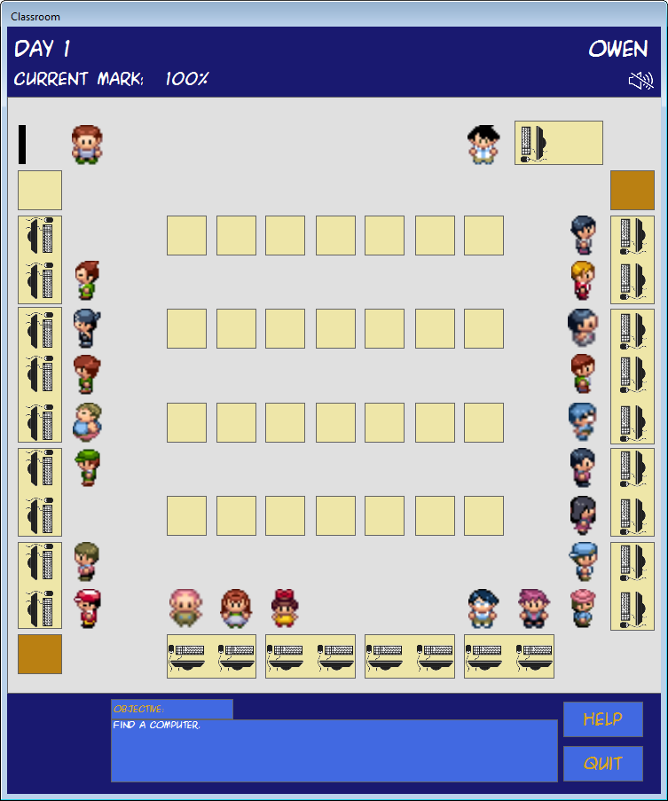
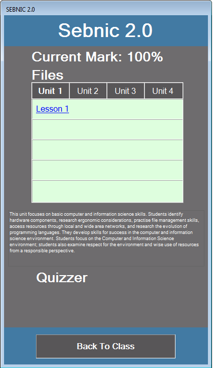
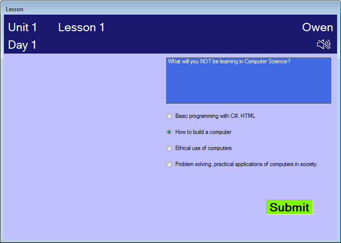
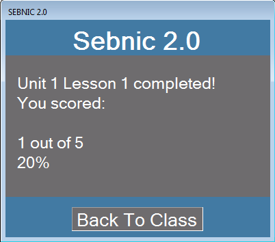
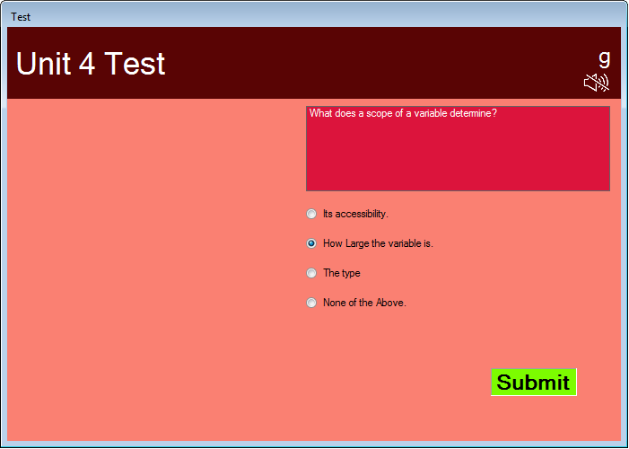
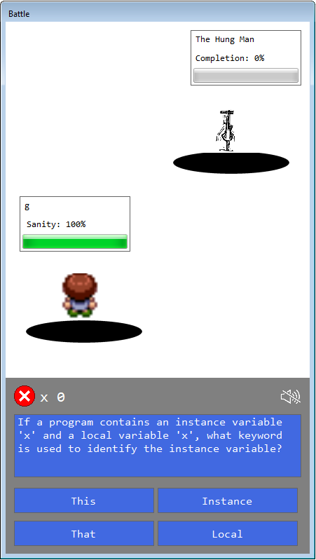

About the Game
Description and How To Play
Welcome to the Interactive Course Simulator: Computer Science 2017! Have you ever felt like re-living this awesome course? Look no further! This awesome Computer Science game will take you through all the lessons we learned in this course. We're re-creating the magic, from making your first webpage to making games in Computer Science.
Get ready to go through the lessons from Units 1 through 4. We even made a virtual sebnic for the lessons. We hope you've been paying attention in this class because we made not 1, not 2, not 3, not 4, not 6 but 5 multiple choice questions from each lesson! To answer the questions, simply pick the radio button you want to select as your answer and then click Submit! Each unit will also contain a test, which is also multiple choice! You will also be going through some assignments, which are battles, which will depend on your logic skills! Be prepared for the final boss, Unit 5! Another cool tidbit we added is the ability to interact with each classmate. Yes, you can interact with the whole class, each with their own original catchphrase! It's exactly like our class, isn't it?! To move around, you use arrow keys OR you have the option to use WASD.
Meters
Sanity Meter: How sane you can be through this class. This will only drop if you get a question wrong in the assignment! So be careful and think logically
Percentage: Drops when you get a poor score in lessons and tests (just like in real life!)
Links
Algorithms
Rough Sketches of Screens
Play our other game: Hangman 2: Classic Comeback!
Download
The entire game in a .zip file

Just the code in a .txt file
Screenshots
Just like Hangman, we've made sure to keep the design clean and simple, as well as easy to use.

Here is the image of the main menu.

Here is the help menu.


Here are the images of the classroom and Sebnic menu.

Here is how each question will look during each lesson...

...and here is the result after each lesson!

This is how the test form looks for each unit.

This is how the battle form looks for each assginment (Hush, don't tell Nintendo).